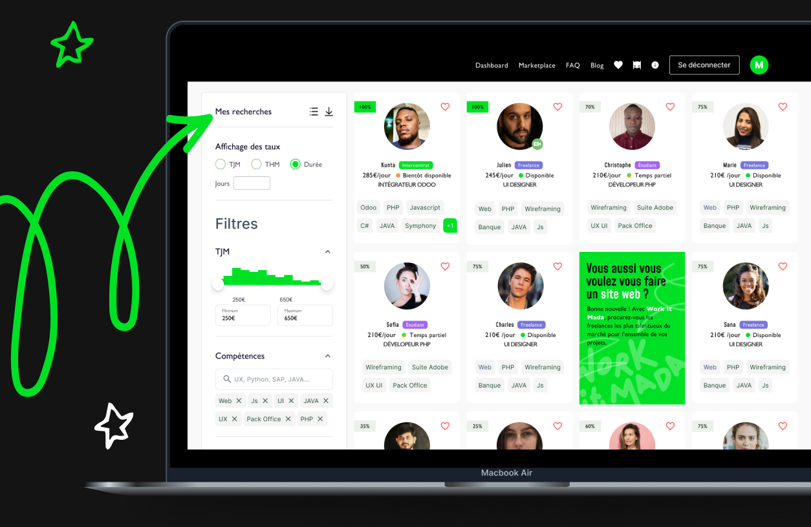
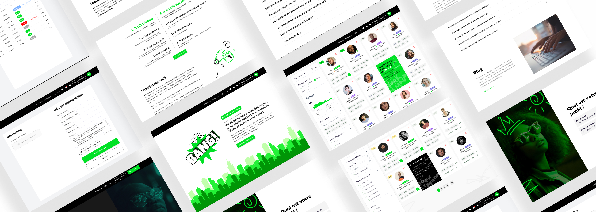
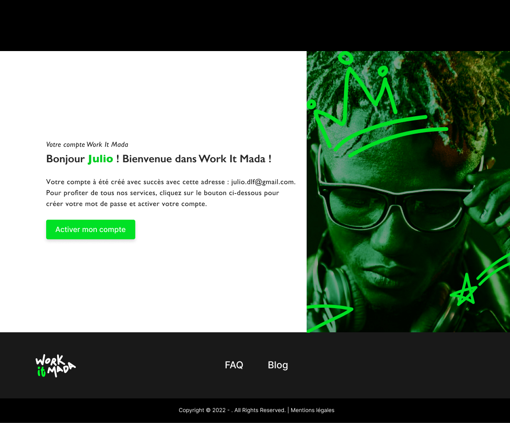
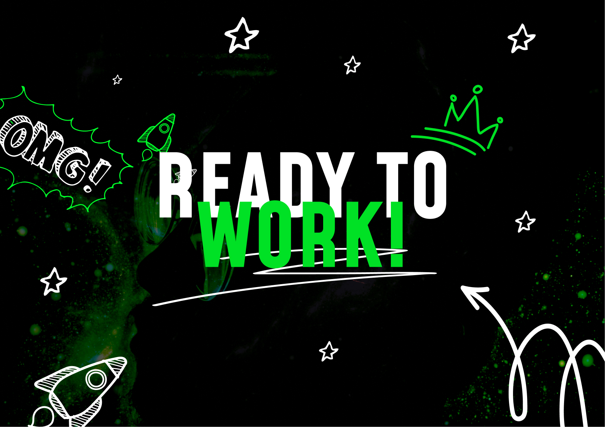
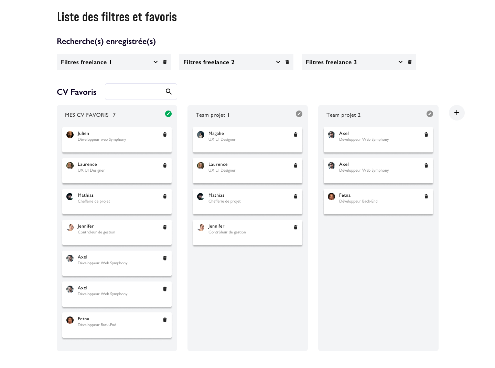
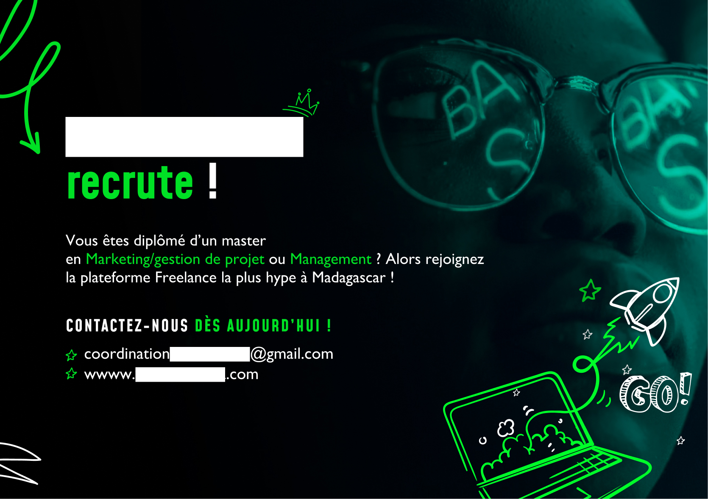

Plateforme freelance à Madagascar
Concevoir de zéro une plateforme freelance pour un marché émergent — de l'UX produit à l'identité visuelle complète, en passant par tous les supports de communication.
Le projet
Ce marché émergent ne disposait d'aucune plateforme locale dédiée à la mise en relation entre freelances tech et entreprises — l'équivalent d'un Malt ou Upwork adapté au contexte local. Le projet a été imaginé pour combler ce vide : valoriser les talents digitaux locaux et permettre aux entreprises de trouver rapidement les bons profils, sans passer par des plateformes internationales inadaptées.
→ Connecter freelances tech locaux et entreprises via un système de matching
→ Une DA distinctive qui parle à la communauté tech locale
→ CV, signatures mail, cartes de visite, réseaux sociaux, roll-up etc.

Un marché tech actif, sans infrastructure pour le valoriser
Ce marché dispose d'une communauté de développeurs, designers et créatifs digitaux en pleine croissance — mais sans espace dédié pour se rendre visible auprès des entreprises locales et internationales. Les plateformes existantes comme Upwork ou Fiverr restaient peu adaptées aux réalités du contexte local : langue, modes de paiement, positionnement tarifaire.
Pas de plateforme locale
Aucun équivalent de Malt ou Upwork adapté au contexte local n'existait.
Talents peu visibles
Les freelances locaux n'avaient pas de vitrine crédible pour se présenter aux entreprises.
Recrutement opaque
Les entreprises cherchaient des profils tech sans outil structuré pour les trouver et les contacter.
Pas d'identité collective
La communauté tech locale manquait d'un espace fédérateur et d'une image forte.
Contrairement à Malt où le freelance consulte des offres, cette plateforme fonctionne à l'inverse : c'est la plateforme qui propose les bons profils aux clients selon leurs besoins. Le freelance n'est pas en compétition — il est mis en avant.
Deux expériences pensées en miroir
La plateforme repose sur deux parcours distincts mais complémentaires. J'ai travaillé les deux en parallèle pour garantir la cohérence de la mise en relation — chaque action d'un côté ayant une répercussion de l'autre.
Se faire trouver, pas chercher
Le freelance ne consulte pas d'offres — il construit son profil et c'est la plateforme qui le met en avant auprès des bons clients.
- 01Création de compte et soumission du dossier
- 02Validation par la plateforme (acceptation / refus)
- 03Construction du profil public (compétences, portfolio, tarifs)
- 04Réception des invitations projets envoyées par les clients
- 05Acceptation ou refus de la mission
Trouver le bon profil, vite
Le client accède à une sélection de profils qualifiés et peut contacter directement un ou plusieurs freelances pour son projet.
- 01Création de compte entreprise
- 02Accès à la base de profils freelances validés
- 03Consultation des profils et filtrage par compétence
- 04Sélection d'un ou plusieurs profils
- 05Envoi d'une invitation directe pour le projet
Une interface pensée pour la clarté et la confiance
Le système de validation à l'entrée était un enjeu important : comme la plateforme met principalement en lien les talents avec les clients, il était essentiel qu'elle puisse connaître et valider chaque profil avant sa mise en relation.

Profil validé — Une fois le profil validé par la plateforme, l'utilisateur finalise son compte en créant son identifiant et son mot de passe.

Ready to work — Une fois le profil complété et les identifiants créés, il accède à son dashboard, prêt à être mis en relation.
La possibilité de recruter plusieurs profils
Le client a accès directement aux profils valides, il peut faire le choix d'inviter un ou plusieurs freelances pour un projet.
Créer des missions facilement — Le client a la possibilité de créer des missions de manière simple et rapide afin de pouvoir consacrer plus de temps à la recherche ou la sélection des talents recommandés par la plateforme.

Ajout à la liste des favoris — Le client peut créer une liste de talents favoris où il retrouvera tous les talents qui lui ont plu. Il pourra également créer des filtres pour trier les profils selon ses besoins.
Une DA construite de bout en bout
L'univers graphique devait incarner l'énergie de la communauté tech locale : moderne, accessible, avec un côté street et illustré qui tranche avec les codes corporate habituels des plateformes de recrutement.
Couleurs
Noir profond (#111) comme base, vert fluo (#39FF14) comme couleur d'action et d'énergie, blanc pour la lisibilité.
Typographie & ton
Une police expressive pour les titres, contraste fort avec une typo neutre pour le corps — un équilibre entre impact et lisibilité.
Illustrations
Univers illustré au trait blanc sur fond noir — fusées, étoiles, laptops, éléments graphiques vectoriels tech et street qui renforcent le côté communauté jeune talent du pays.
Une identité déclinée sur tous les points de contact
Au-delà de la plateforme, la déclinaison de l'identité a été assurée sur l'ensemble des supports — de l'onboarding des freelances aux prises de parole sur les réseaux, sur une durée de 3 ans.
Bannières Linkedin


Postes Linkedin



Postes Instagram & Facebook


Disponible pour de nouveaux projets